Culture
The Arts
Dance
Dabke is a Levantine folk dance, particularly popular among Lebanese, Jordanian, Palestinian, and Syrian communities. Dabke combines circle dance and line dancing and is widely performed at weddings and other joyous occasions. The line forms from right to left and the leader of the dabke heads the line, alternating between facing the audience and the other dancers.
The etymology of 'dabke' is uncertain but is thought to be derived from the Levantine Arabic word dabaka (Arabic: دبكة) meaning "stamping of the feet" or "to make a noise" It has become a symbolic form of resistance in occupied Palestine.
Embroidery
Traditional Costumes
Palestinian clothing from the early 19th century to World War I show "traces of similar styles of clothing represented in art over 3,000 years ago."The Keffiyeh
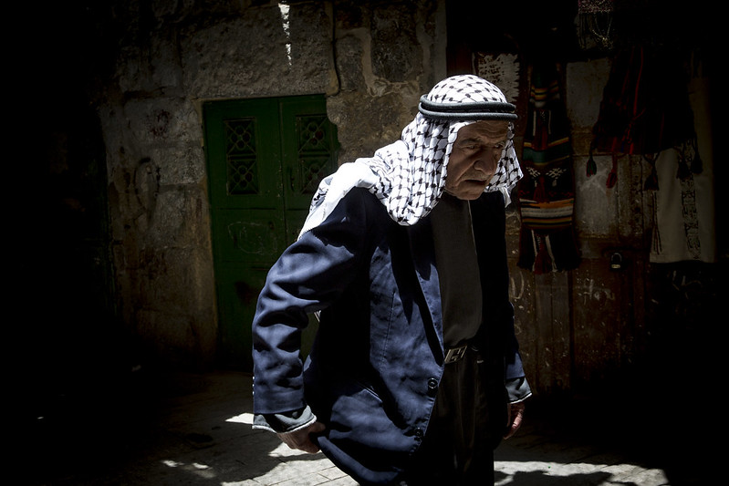The Palestinian keffiyeh is a distinctly patterned black-and-white keffiyeh.
White keffiyehs had been traditionally worn by Palestinian peasants and bedouins to protect from the sun, when Palestine was part of the Ottoman Empire. Its use as a symbol of Palestinian nationalism and resistance dates back to the 1936–1939 Arab revolt in Palestine, which saw its wider use by more sections of Palestinian society.
Early Jewish migrants to Mandatory Palestine adopted the keffiyeh because they saw it as part of the authentic local lifestyle.
The patterns on the Palestinian keffiyeh symbolize various themes:
Literature
Ghassan Fayiz Kanafani (1936-1972) was a prominent Palestinian author and politician, considered to be a leading novelist of his generation and one of the Arab world's leading Palestinian writers. Kanafani's works have been translated into more than 17 languages.
Kanafani was born in Acre, Mandatory Palestine in 1936. During the 1948 Palestine war, his family was forced out of their hometown by Zionist militias.
On 8 July 1972, Kanafani, was assassinated in Beirut by the Mossad, the Israeli foreign intelligence service. When Kanafani turned on the ignition of his Austin 1100, a grenade connected to the ignition switch detonated and in turn detonated a 3 kilo plastic bomb planted behind the bumper bar. Both Kanafani and his 17-year old niece Lamees Najim, who had been accompanying him, were killed.
Poetry
Mahmoud Darwish (1941-2008) was a Palestinian poet and author who was regarded as Palestine's national poet.
In 1988, Darwish wrote the Palestinian Declaration of Independence, which was the formal declaration for the creation of a State of Palestine. Darwish won numerous awards for his works. In his poetic works, Darwish explored Palestine as a metaphor for the loss of Eden, birth and resurrection, and the anguish of dispossession and exile. He has been described as incarnating and reflecting "the tradition of the political poet in Islam, the man of action whose action is poetry."
Oral Traditions (Hikaye & Hakawati)
The art of story telling was for a long time part of the cultural life in Arabic speaking countries of the Middle East. The tradition of "Tales From a Thousand and One Nights" is not an exception. In each small town or village of Palestine, itinerant story tellers called hakawati would visit and tell folk stories they knew, often in teahouses. The tales of the hakawati, once told for all ages, are now sometimes emerging from the Palestinian diaspora as children's books.
Palestinian hikaye is a form of oral literature created, performed and preserved by women. Usually narrated in winter, the performers are usually older women, who tell them to younger women and children.
Film
Check out this list of films made by Palestinian filmmakers
Architecture
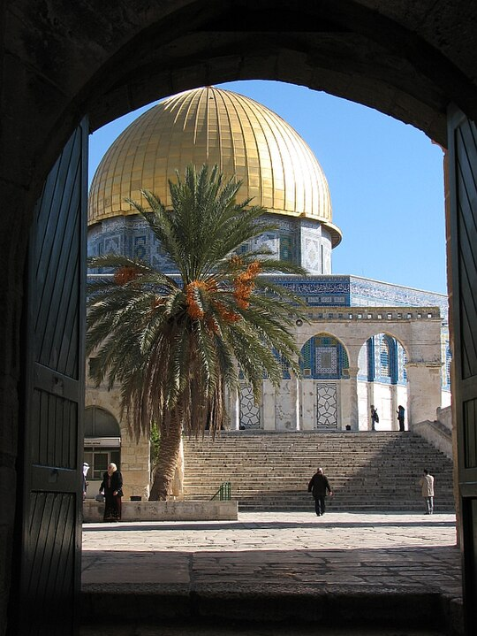The architecture of Palestine covers a vast historical time frame and a number of different styles and influences over the ages. The urban architecture of the region of Palestine prior to 1850 was relatively sophisticated. The Palestinian townhouse shared in the same basic conceptions regarding the arrangement of living space and apartment types commonly seen throughout the Eastern Mediterranean. The rich diversity and underlying unity of the architectural culture of this wider region stretching from the Balkans to North Africa was a function of the exchange fostered by the caravans of the trade routes, and the extension of Ottoman rule over most of this area, beginning in the early 16th century through until the end of World War I.
Cuisine
The cuisine is a diffusion of the cultures of civilizations that settled in the region of Palestine, particularly during and after the Islamic era beginning with the Arab Ummayad conquest, then the eventual Persian-influenced Abbasids and ending with the strong influences of Turkish cuisine, resulting from the coming of the Ottoman Turks. It is similar to other Levantine cuisines, including Lebanese, Syrian and Jordanian.
Cooking styles vary, and types of cooking style and ingredients used are generally based on the climate and location of the particular region and on traditions. Rice and variations of kibbee are common in the Galilee. The West Bank engages primarily in heavier meals involving the use of taboon bread, rice and meat, and coastal plain inhabitants frequent fish, other seafood, and lentils. The Gaza cuisine is a variation of the Levant cuisine, but is more diverse in seafood and spices. Gaza's inhabitants heavily consume chili peppers too. Meals are usually eaten in the household but dining out has become prominent particularly during parties where light meals like salads, bread dips and skewered meats are served.
Cooking styles vary, and types of cooking style and ingredients used are generally based on the climate and location of the particular region and on traditions. Rice and variations of kibbee are common in the Galilee. The West Bank engages primarily in heavier meals involving the use of taboon bread, rice and meat, and coastal plain inhabitants frequent fish, other seafood, and lentils. The Gaza cuisine is a variation of the Levant cuisine, but is more diverse in seafood and spices. Gaza's inhabitants heavily consume chili peppers too. Meals are usually eaten in the household but dining out has become prominent particularly during parties where light meals like salads, bread dips and skewered meats are served.
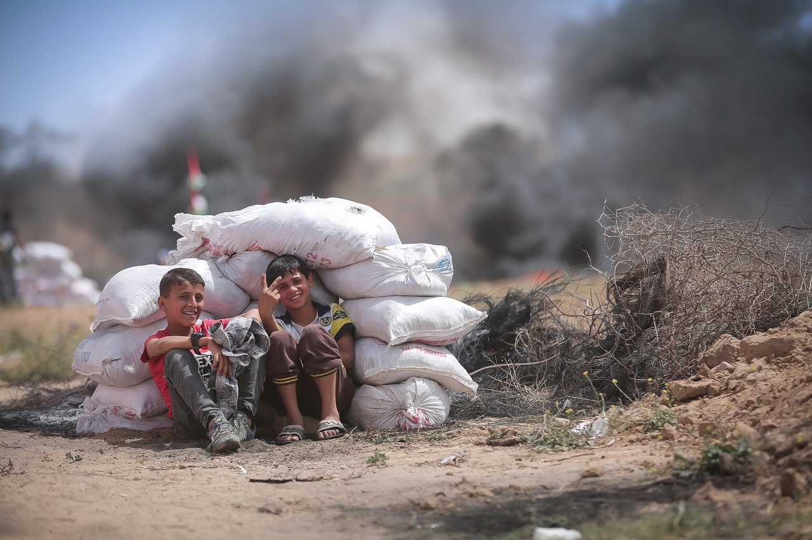Blockade of the Gaza Strip
The import of goods into the Gaza Strip is restricted because of the blockade of the Gaza Strip by Egypt and Israel. Israel is accused by Palestinians of denying humanitarian supplies from aid organizations, including UN agencies, into the Gaza Strip in an effort to intentionally weaponize starvation against the people of certain areas of Gaza.
Israel's bombardment on civilian structures has led to imminent famine conditions in the Gaza Strip, resulting from Israeli airstrikes and Israel's ongoing blockade of the Strip, which includes restrictions on humanitarian aid. 2.2 million people in Gaza are now experiencing food insecurity at emergency level.
Airstrikes have destroyed food infrastructure, such as bakeries, mills, and food stores, and there is widespread scarcity of essential supplies due to the blockade of aid. This has caused starvation for more than half a million Gazans and is part of a broader humanitarian crisis in the Strip. It is the "highest number of people facing catastrophic hunger" ever recorded on the IPC scale, and is widely expected to be the most intense man-made famine since the Second World War
Here is a partial list of restricted goods as of 2010.Olive Trees
Olive trees are a major agricultural crop in the Palestinian territories, where they are mostly grown for olive oil production. It has been estimated that olive production accounted for 57% of cultivated land in the Palestinian territories with 7.8 million fruit-bearing olive trees in 2011. In 2014, an estimated 108,000 tonnes of olives were pressed producing 24,700 tonnes of olive oil – which contributed US $109 million in added value to the crop.[2] Around 100,000 households rely on olives for their primary income.
The olive tree is seen by many Palestinians as being a symbol of nationality and connection to the land, particularly due to their slow growth and longevity.
The destruction of Palestinian olive trees has become a feature of the Israeli–Palestinian conflict, with regular reports of damage by Israeli settlers. In May 2023 a United Nations report stated that some 5,000 olive trees had been vandalized by settlers in less than 5 months
Olive trees have been cultivated in the region for many thousands of years, with some evidence of olive groves and olive oil technologies dating to the Chalcolithic period, between 3600–3300 BCE. Later in the Bronze Age, olive fruits were widely traded as shown by the Uluburun shipwreck – which may have been carrying an olive shipment from Palestine.
Olive trees are seen as being a major component of traditional Palestinian farming life, with several generations of families gathering together to harvest the olives for two months from mid-September. The harvest season is often associated with celebration for these families, and family and local community celebrations are organized with traditional Palestinian folk music and dancing.
In 2012 Israel was urged to protect West Bank olive trees after trees were uprooted in al-Mughir, Turmusaya, Nablus, al-Khader, and Ras Karkar. In 2014 trees were uprooted in Deir Istiya and Wadi Qana with some 800,000 to one million trees having been destroyed since 1967. In 2016 trees were uprooted to build a road in Qalqilya. In 2017 laborers began uprooting olive trees to build a bypass road near Azzun and Nabi Ilyas. According to international law an occupying power can only take land to build roads benefiting the residents or military needs specific to the occupied territory. In January 2017 B’Tselem reported there were approximately 60 kilometres (37 mi) of roads that Palestinian were prohibited from using. With the many trees being removed or vandalized, some 700 to 1000 years old and still bearing fruit, to build a wall roads, other "improvements", as well as for the building of illegal settlements this has caused economic hardships especially with families separated from their farmlands.[
In 2021 down to October, settlers vandalized 8,000 trees in the West Bank. In the first two weeks of the 2021 harvest in October alone, 18 incidents of damage to Palestinian olive groves, consisting of acts of battering or chopping down trees or denuding their fruits were reported.
Levantine Culture
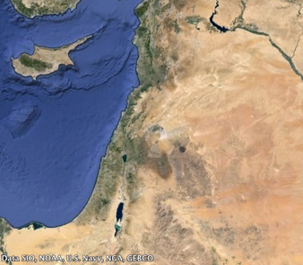Today, "Levant" is the term typically used by archaeologists and historians with reference to the history of the region. Scholars have adopted the term Levant to identify the region due to its being a "wider, yet relevant, cultural corpus" that does not have the "political overtones" of Syria-Palestine. The term is also used for modern events, peoples, states or parts of states in the same region, namely Cyprus, Egypt, Iraq, Israel, Jordan, Lebanon, Palestine, Syria, and Turkey are sometimes considered Levant countries
Religion

The majority of Palestinians are Muslim, the vast majority of whom are followers of the Sunni branch of Islam, with a small minority of Ahmadiyya. Palestinian Christians represent a significant minority of 6%, and belong to several denominations, followed by much smaller religious communities, including Druze and Samaritans. Palestinian Jews – considered Palestinian by the Palestinian National Charter adopted by the Palestine Liberation Organization (PLO) which defined them as those "Jews who had normally resided in Palestine until the beginning of the Zionist invasion" – today identify as Israelis (with the exception of a very few individuals). Palestinian Jews almost universally abandoned any such identity after the establishment of Israel and their incorporation into the Israeli Jewish population, which was originally composed of Jewish immigrants from around the world.
The British census of 1922 registered 752,048 inhabitants in Palestine, consisting of 660,641 Palestinian Arabs (Muslim and Christian Arabs), 83,790 Palestinian Jews, and 7,617 persons belonging to other groups. The corresponding percentage breakdown is 87% Muslim and Christian Arab and 11% Jewish.
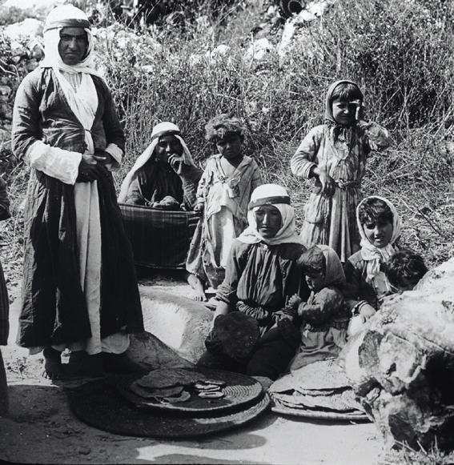The Druze became Israeli citizens and Druze males serve in the Israel Defense Forces, though some individuals identify as "Palestinian Druze". According to Salih al-Shaykh, most Druze do not consider themselves to be Palestinian: "their Arab identity emanates in the main from the common language and their socio-cultural background, but is detached from any national political conception. It is not directed at Arab countries or Arab nationality or the Palestinian people, and does not express sharing any fate with them. From this point of view, their identity is Israel, and this identity is stronger than their Arab identity".
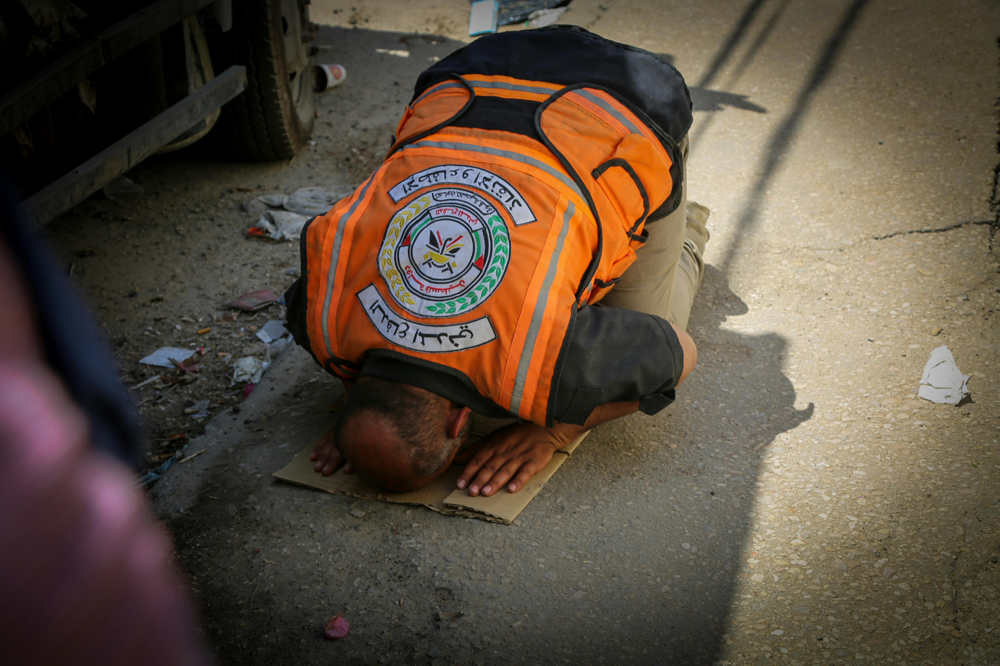There are also about 350 Samaritans who carry Palestinian identity cards and live in the West Bank while a roughly equal number live in Holon and carry Israeli citizenship. Those who live in the West Bank also are represented in the legislature for the Palestinian National Authority. They are commonly referred to among Palestinians as the "Jews of Palestine", and maintain their own unique cultural identity.
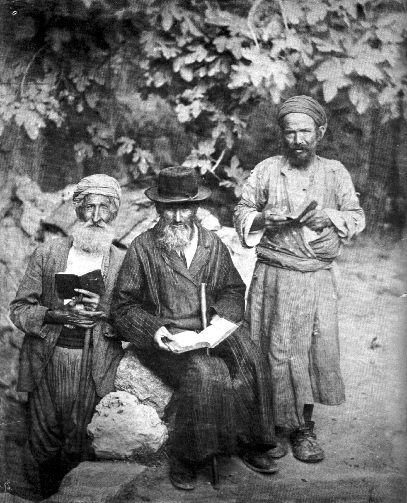Jews who identify as Palestinian Jews are few, but include Israeli Jews who are part of the Neturei Karta group, and Uri Davis, an Israeli citizen and self-described Palestinian Jew (who converted to Islam in 2008 in order to marry Miyassar Abu Ali) who serves as an observer member in the Palestine National Council.
Dialect
Palestinian Arabic is the main language spoken by Palestinians and represents a unique dialect. A variety of Levantine Arabic, it is spoken by Arab citizens of Israel and by Palestinian populations in the West Bank, Gaza, and Israel.
Pre-Islamic Cultural Roots

The region of Palestine, also known as historic Palestine, is a geographical area in West Asia. It includes modern-day Israel and the State of Palestine, as well as parts of northwestern Jordan in some definitions. Other names for the region include Canaan, the Promised Land, the Land of Israel, or the Holy Land.

The earliest written record referring to Palestine as a geographical region is in the Histories of Herodotus in the 5th century BCE, which calls the area Palaistine, referring to the territory previously held by Philistia, a state that existed in that area from the 12th to the 7th century BCE. The Roman Empire conquered the region and in 6 CE established the province known as Judaea, but then in 132 CE in the period of the Bar Kokhba revolt the province was expanded and renamed Syria Palaestina.[4] In 390, during the Byzantine period, the region was split into the provinces of Palaestina Prima, Palaestina Secunda, and Palaestina Tertia. Following the Muslim conquest of the Levant in the 630s, the military district of Jund Filastin was established. While Palestine's boundaries have changed throughout history, it has generally comprised the southern portion of regions such as Syria or the Levant.

As the birthplace of Judaism and Christianity, Palestine has been a crossroads for religion, culture, commerce, and politics. In the Bronze Age, it was home to Canaanite city-states; and the later Iron Age saw the emergence of Israel and Judah. It has since come under the sway of various empires, including the Neo-Assyrian Empire, the Neo-Babylonian Empire, the Achaemenid Empire, the Macedonian Empire, and the Seleucid Empire. The brief Hasmonean dynasty ended with its gradual incorporation into the Roman Empire, and later the Byzantine Empire, during which Palestine became a center of Christianity. In the 7th century, Palestine was conquered by the Rashidun Caliphate, ending Byzantine rule in the region; Rashidun rule was succeeded by the Umayyad Caliphate, the Abbasid Caliphate, and the Fatimid Caliphate. Following the collapse of the Kingdom of Jerusalem, which had been established through the Crusades, the population of Palestine became predominantly Muslim. In the 13th century, it became part of the Mamluk Sultanate, and after 1516, spent four centuries as part of the Ottoman Empire.

Education
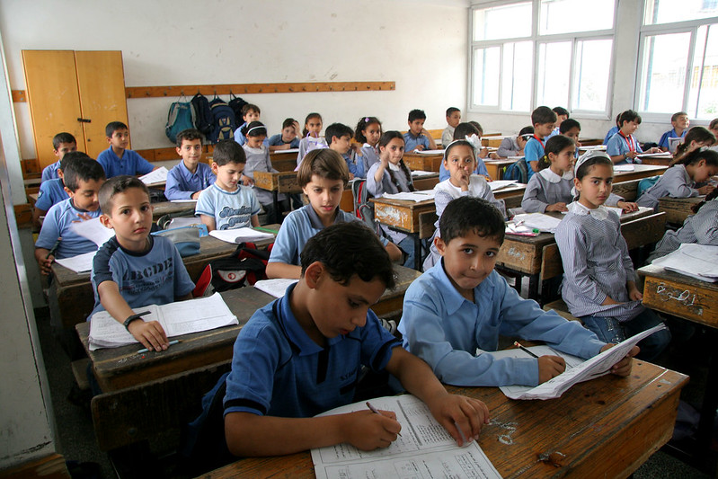In the late 19th century and early 20th century, Palestinian intellectuals were integral parts of wider Arab intellectual circles, as represented by individuals such as May Ziadeh and Khalil Beidas. Educational levels among Palestinians have traditionally been high. In the 1960s, the West Bank had a higher percentage of its adolescent (15 to 17 years of age) population enrolled in high school than Israel; the West Bank had a 44.6% high school enrollment rate versus a 22.8% enrollment rate in Israel. Claude Cheysson, France's Minister for Foreign Affairs under the first Mitterrand Presidency, held in the mid eighties that "even thirty years ago, [Palestinians] probably already had the largest educated elite of all the Arab peoples.
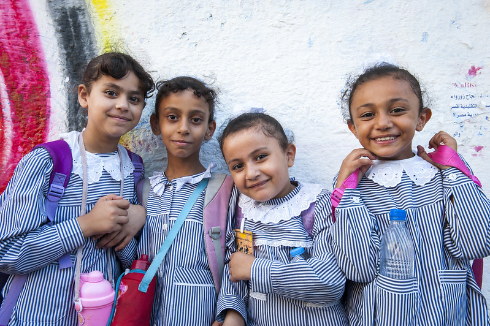The literacy rate of Palestine was 96.3% according to a 2014 report by the United Nations Development Programme, which is high by international standards. There is a gender difference in the population aged above 15 with 5.9% of women considered illiterate compared to 1.6% of men.[299] Illiteracy among women has fallen from 20.3% in 1997 to less than 6% in 2014. In the State of Palestine, the Gaza Strip has the highest literacy rate. According to a press blog of Columbia University, Palestinians are the most educated refugees
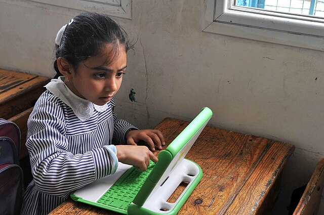The West Bank and the Gaza Strip together have 14 universities, 18 university colleges, 20 community colleges and 3,000 schools. An-Najah National University in Nablus is the largest university in the country, followed by Al-Quds University in Jerusalem and Birzeit University in Birzeit near Ramallah. Al-Quds University achieved a 5-star rating in quality standards and was termed the "most socially responsible university in the Arab world". In 2018, Birzeit University was ranked as one of the top 2.7% of universities worldwide in the 2019 edition of the World University Rankings.

Since the outbreak of the Israel–Hamas war on 7 October 2023, the Israel Defense Forces (IDF) has conducted numerous airstrikes on more than 200 educational facilities, including universities, in the Gaza Strip. The IDF states such airstrikes are the result of the placement of military infrastructure and rocket launching from civilian areas, including schools. By late March 2024, the United Nations recorded more than 200 Israeli attacks on schools in Gaza, with at least 53 schools totally destroyed. By July 2024, all 19 Gaza universities had suffered severe damage with 80% of university buildings destroyed, 103 academics killed, and 90,000 students enrolled in higher education no longer able to pursue their studies. In June 2024, UNOCHA stated 76 percent of Gaza's schools required "full reconstruction or major rehabilitation", and in August 2024, UNICEF stated 564, or 85 percent, of all schools in Gaza had been hit by Israeli attacks
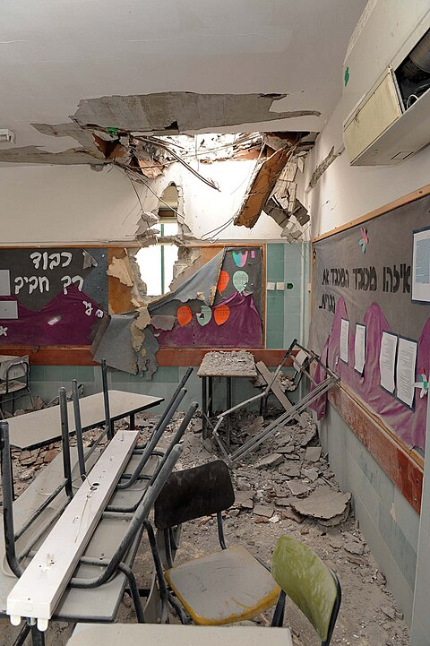Israel's motivations for attacking civilian structures in Gaza remains disputed. Israel states it is attacking them as military targets, while critics accuse Israeli soldiers of deliberately targeting civilians and civilian infrastructure in revenge for the 2023 Hamas-led attack on Israel.
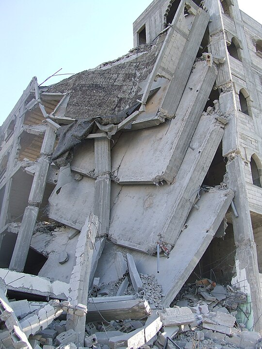On 16 January, the Education Ministry reported 4,368 students had been killed and 388 schools damaged since 7 October. Human rights groups reported 94 professors had been killed. By 4 February 2024, Gaza's Ministry of Education stated 4,800 students had been killed. In March 2024, the Ministry of Education and the UN stated that 5,479 students had been killed thus far. By the end of March, the Ministry of Education stated the total had risen to 5,881 students. As a result of the destruction of schools in Gaza, the education of 600,000 children has been cut short.
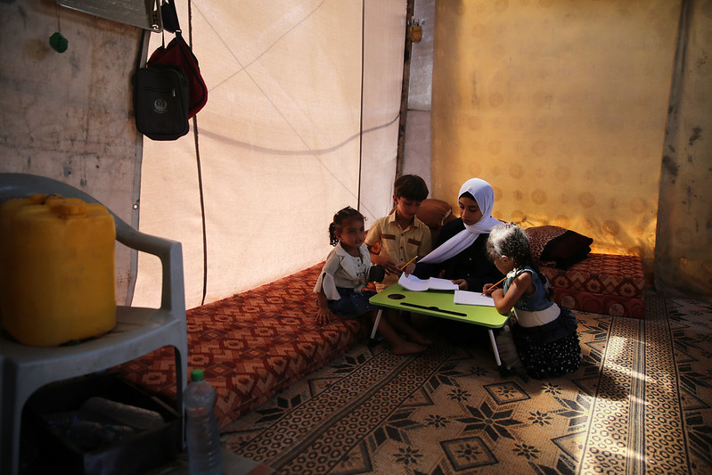A report by researchers at the University of Cambridge, the Centre for Lebanese Studies, and UNRWA stated that Israel's attacks had set back Palestinian children's education five years and risked creating a "lost generation".
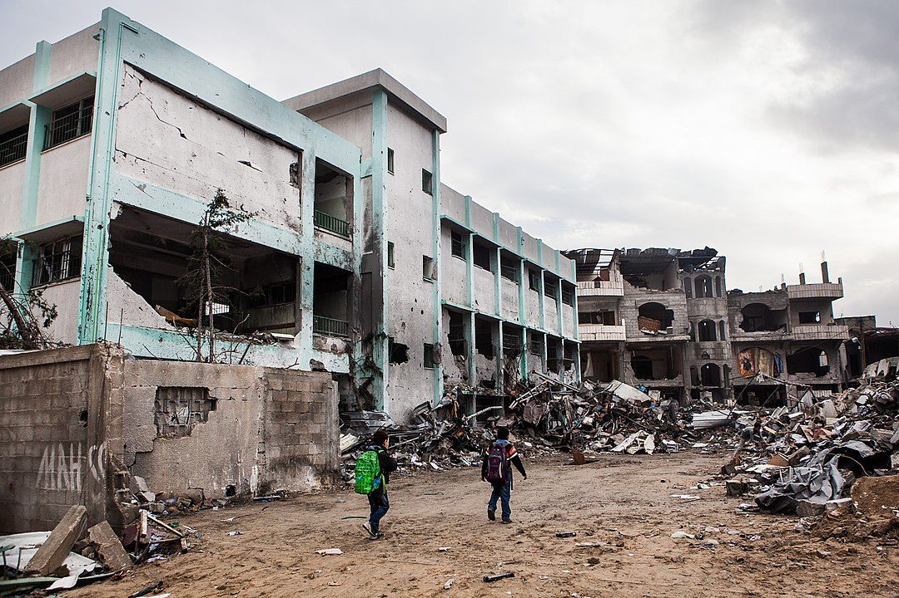Sports
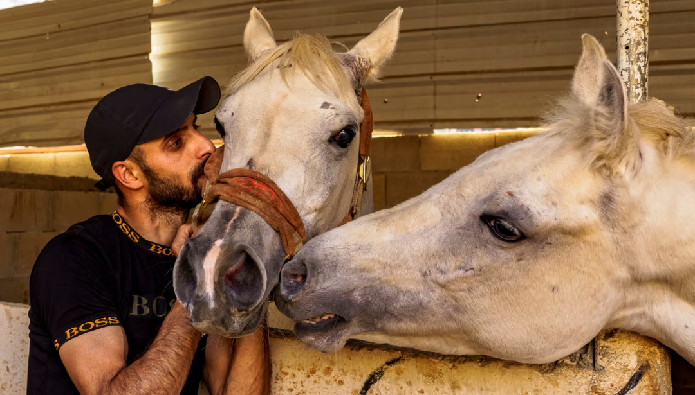The Turmus Aya Equestrian Club, established in 2007, is a riding club dedicated to the mission of providing affordable access to horses for Palestinians. Ashraf Rabi, the founder, maintains that "this is part of the development of Palestine. Horses are a big part of our Arab culture and we must embrace it."
Football
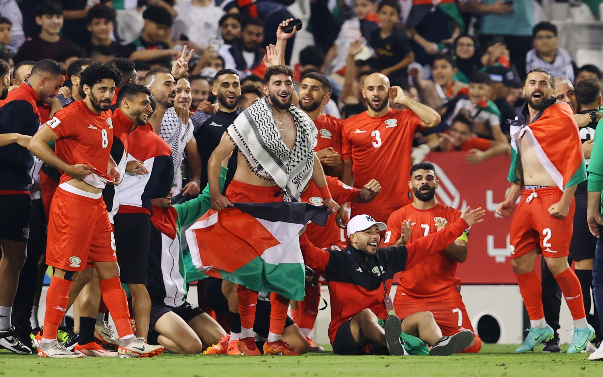Association football has been described as the national sport of Palestine,[7] and it is also the most popular. There is a West Bank Premier League, and Gaza Strip League. The Palestine national football team played Afghanistan in the 2014 FIFA World Cup qualifiers. They visited Australia for the 2015 AFC Asian Cup. Some girls' schools have incorporated football into their curricula. Prior to the creation of Israel, dozens of Palestinian sport clubs were active, however the 1948 war brought most of these to a closure.
Ramallah hosts some of the best gyms in Palestine.[11] The separation wall and numerous checkpoints has caused difficulty in movement for Palestinian athletes, however Palestinian athletes were still able to reach East Jerusalem sport centers as of 2009.
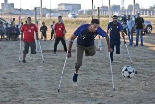Surfing
Access to their waters in the correspondent Mediterranean coast has been progressively denied to the population. Nowadays and since 2012, more than 85% of the maritime areas agreed to in 1995 have been denied to the fishermen.
The ocean, however, is among the last things that people in the Gaza Strip can enjoy, and a public space all the citizens have to share. People surfing in the Gaza Strip find their way to freedom from their political and social situation in the aquatic activity. In this way, surfing is part of their daily lives and their culture. Surfing takes a very important role for the Palestinian population in the Gaza Strip, has been transmitted generationally, and has an important meaning for their homeland.
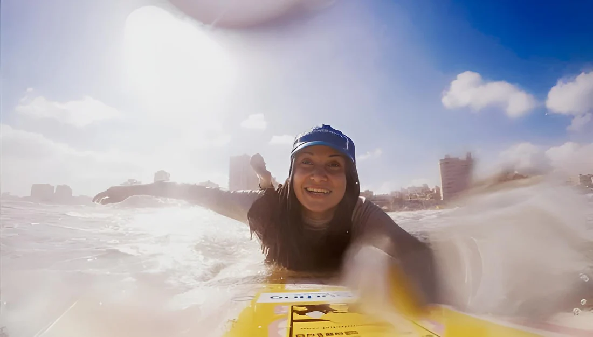The political conflict and turmoil, the scarce supplies, and the loss of rights over their lands make it difficult for Gazans to surf. Previous to the Gaza Surf Club, since 2005, the Surfing 4 Peace cooperation has been trying to donate surfboards. It took a lot of effort and difficulty to donate, as the security ring and checkpoints were not allowing them to cross. In 2010 Surfing 4 Peace donated 30 surfboards to the local surfers in Gaza